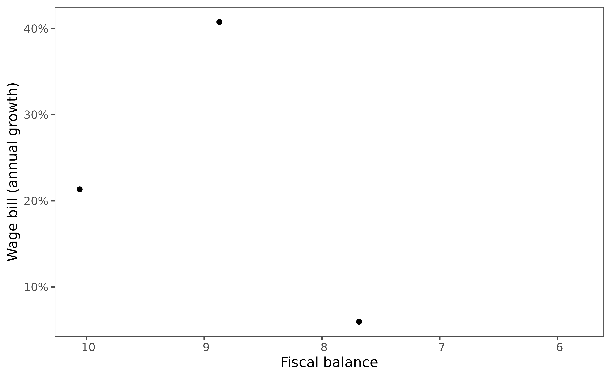
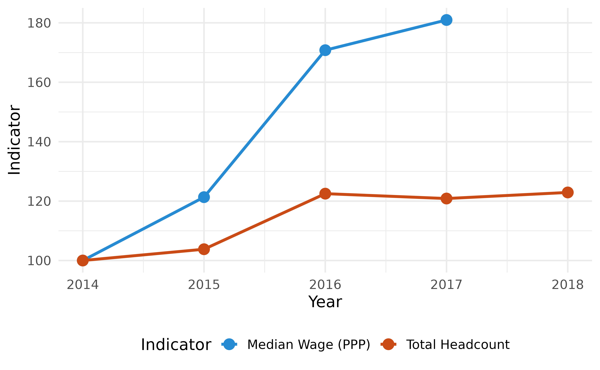
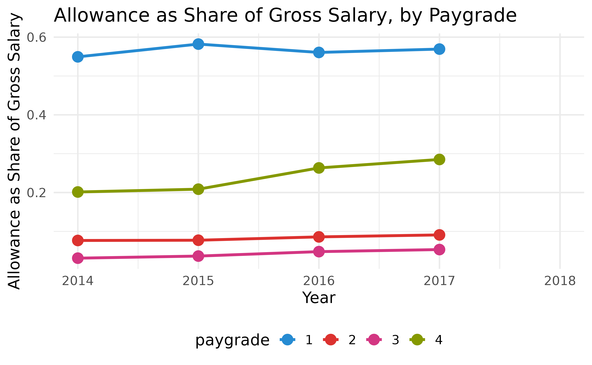

HR Analytics Standard Report
standard_report.RmdOverview
This report provides a standard set of indicators and visualizations on HRMIS analytics, building on the World Bank’s Public Sector and Employment Assessment Framework. The objective of this assessment is to conduct public sector employment and compensation assessments that can help develop evidence-based reforms.
The assessment framework consists of two parts. The first part assesses both the institutional and behavioral aspects of employment and compensation practices. It comprises six dimensions:
- Wage bill planning.
- Wage bill controls.
- Employment levels and distribution of the public sector workforce.
- Wage competitiveness of the public sector.
- Wage equity.
- Wage incentives.
The second part assesses the impact of these employment and compensation practices on:
- Fiscal sustainability.
- Public sector productivity.
- Labor allocation between the public and private sectors.
Preparing the data
We have designed a convenient function,
govhr::compute_hrmreport_stats, that produces all summary
statistics necessary to produce the standard report on HR. All you need
to do is provide the three standard modules as inputs to the
function.
library(govhr)
hrm_report_stats <- compute_hrmreport_stats(
contract_dt = govhr::bra_hrmis_contract,
worker_dt = govhr::bra_hrmis_worker,
org_dt = govhr::bra_hrmis_org,
macro_indicators = govhr::macro_indicators
)Fiscal sustainability
The wage bill can potentially have a major effect on fiscal balances, but there are no simple benchmarks for the “right” size of the wage bill. In fact, cross-national evidence suggests that there is no strong correlation between the size of the wage bill and fiscal balance. Wage bill dynamics are a better predictor of fiscal sustainability. In general, increases in the wage bill are associated with worsening of the fiscal balance. In addition, wage expenditures are pro-cyclical, rising during periods of economic growth, but not falling as much during downturns due to structural rigidity.
Guidance questions for the assessment:
- What are the wage bill dynamics and how are changes in the wage bill being financed - i.e. through deficits, raising revenues, or reducing other expenditures?
- What are the main drivers of wage bill growth?
- What are the wage bill projections for baseline and different policy option scenarios based on wage bill modeling?
Correlation between wage bill growth and fiscal balances
wagebill_annual <- hrm_report_stats |>
pluck(
"wagebill"
) |>
pluck(
"wagebill_annual"
) |>
filter(
indicator == "gross_salary_ppp_sum"
) |>
mutate(
country_code = "BRA"
) |>
left_join(
macro_indicators, by = c("country_code", "year")
)
wagebill_annual |>
compute_change(
value,
date_col = year
) |>
ggplot() +
geom_point(
aes(fiscal_balance, value_growth)
) +
scale_y_continuous(
labels = scales::percent_format()
) +
labs(
x = "Fiscal balance",
y = "Wage bill (annual growth)"
)
Decomposition of wage growth: employment and wages
annual_headcount <- hrm_report_stats |>
pluck("publicemployment_share") |>
select(
year,
headcount = summary_value
)
wagebill_annual |>
left_join(
annual_headcount,
by = "year"
) |>
# filter(year <= 2017) |>
transmute(
year,
`Median Wage (PPP)` = value/value[year == min(year)] * 100,
`Total Headcount` = headcount/headcount[year == min(year)] * 100
) |>
pivot_longer(
-c(year),
names_to = "Indicator"
) |>
ggplot_point_line(
year,
value,
group = Indicator
) +
labs(
x = "Year",
y = "Indicator"
)
Wage incentives
The extent to which wage increases are explicitly linked to performance is important for both employee motivation and public sector productivity. This section provide some key stylized facts that provide evidence of the productivity and fiscal implications of pay incentives. These include: the magnitude of promotion-based and seniority-based annual wage increases, expected wage increases over an employee’s career and the coverage and key design features of performance bonuses.
Guidance questions for the assessment:
- What wage growth is typical for public sector employees in different occupational groups over the course of their career? How of much of this wage growth is dependent on promotions and how much can occur “within grade”?
- Does the annual performance management system distinguish between high and low performers? Are promotion decisions largely seniority based and/or automatic?
- Are there performance bonus schemes and if so what occupation groups and percentage of the staff receive them; and how large is the bonus that staff are expected to receive?
- Is there targeted, significant additional pay for essential workers to serve in hard-to-staff locations such as rural areas?
Allowances as a share of gross pay
hrm_report_stats |>
pluck("wagebill") |>
pluck("wagebill_allowshare_paygrade") |>
filter(
paygrade %in% 1:4
) |>
ggplot_point_line(
year,
allowance_rate,
group = paygrade
) +
labs(
x = "Year",
y = "Allowance as Share of Gross Salary",
title = "Allowance as Share of Gross Salary, by Paygrade"
)